It is really easy to create synthetic textures. There are two kinds of "texture filters":
- Rendering filters which are drawing new images
- Modification filters which are manipulating existing images
Renderer
Cell

Figure 1a. Default cells |
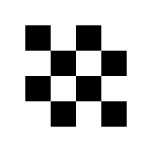
Figure 1b. Cells: cone + chess |
Figure 1c. Cells: cross + grid |
See Procedural::Cell
Cloud
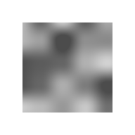
Figure 2. Cloud
Gradient
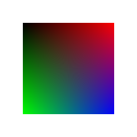
Figure 3. Gradient
Image
Figure 4. Image
Labyrinth
Figure 5. Labyrinth
Marble
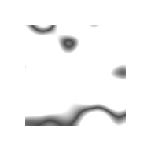
Figure 6. Marble
Noise
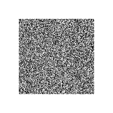
Figure 7a. White noise |
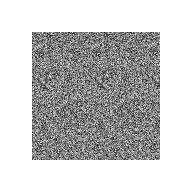
Figure 7b. Perlin noise |
Solid
Figure 8. Solid
Textile

Figure 9. Textile
Wood
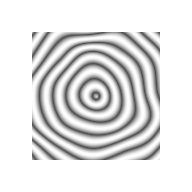
Figure 10. Wood
See Procedural::Wood
Manipulation
Abnormals
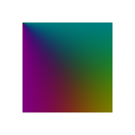
Figure 1. Abnormals
Alpha
Figure 2. Alpha
AlphaMask
Figure 3. AlphaMask
Blit
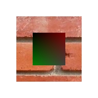
Figure 4. Blit
See Procedural::Blit
Blur
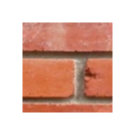
Figure 5a. Blur: Mean |
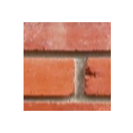
Figure 5b. Blur: Gauss |
See Procedural::Blur
Channel
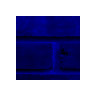
Figure 6a. Channel: blue |
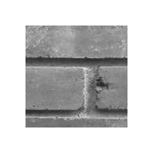
Figure 6b. Channel: gray |
CircleTexture
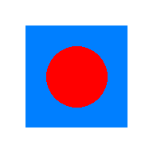
Figure 7. CircleTexture
Colours
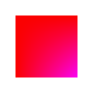
Figure 8. Colours
Combine
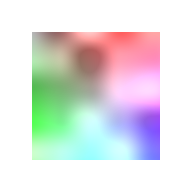
Figure 9. Combine
Convolution
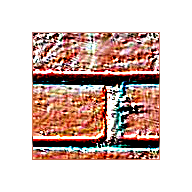
Figure 10. Convolution
Crack
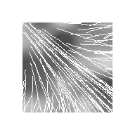
Figure 11. Crack
Cycloid
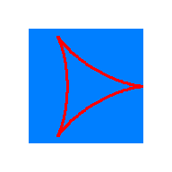
Figure 12a. Cycloid: Hypocycloid |
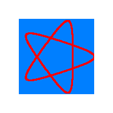
Figure 12b. Cycloid: Hypotrochoid |
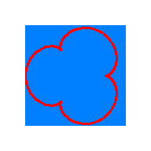
Figure 12c. Cycloid: Epicycloid |
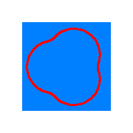
Figure 12d. Cycloid: Epitrochoid |
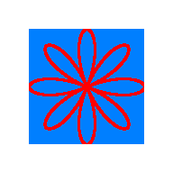
Figure 12e. Cycloid: Rose curve |
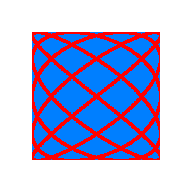
Figure 12f. Cycloid: Lissajous curve |
Dilate
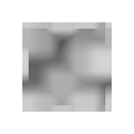
Figure 13. Dilate
Distort
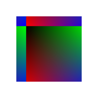
Figure 14. Distort
EdgeDetection

Figure 15. EdgeDetection
EllipseTexture
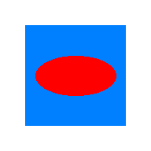
Figure 16. EllipseTexture
See Procedural::EllipseTexture
Flip
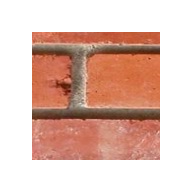
Figure 17a. Flip: point |
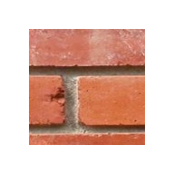
Figure 17b. Flip: vertical |
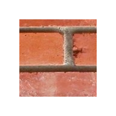
Figure 17c. Flip: horizontal |
See Procedural::Flip
Glow

Figure 18. Glow
See Procedural::Glow
Invert

Figure 19. Invert
Jitter
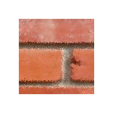
Figure 20. Jitter
Lerp
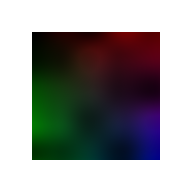
Figure 21. Lerp
See Procedural::Lerp
Light
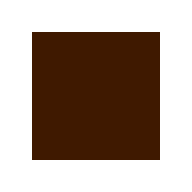
Figure 22. Light
See Procedural::Light
Lookup
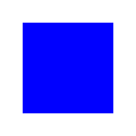
Figure 23. Lookup
Normals
Figure 24. Normals
OilPaint
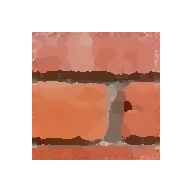
Figure 25. OilPaint
Polygon
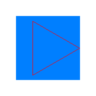
Figure 16a. Polygon {3} |
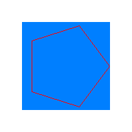
Figure 16b. Polygon {5} |
Figure 16c. Polygon {6} |
RandomPixels
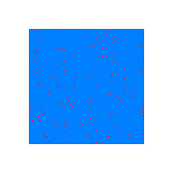
Figure 27. RandomPixels
RectangleTexture
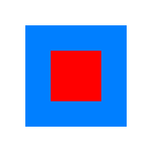
Figure 28. RectangleTexture
See Procedural::RectangleTexture
RotationZoom
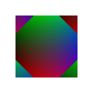
Figure 29. RotationZoom
Segment

Figure 30. Segment
Sharpen
Figure 31a. Sharpen: basic |
Figure 31b. Sharpen: gaussian |
TextTexture
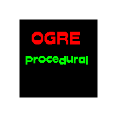
Figure 32. TextTexture
See Procedural::TextTexture
Threshold
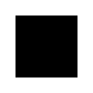
Figure 33. Threshold
Vortex
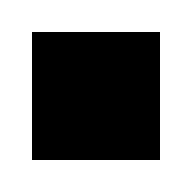
Figure 34. Vortex
Example
The Sample_Material project demonstrates how to use various texture generators and modifiers to build a texture, with it's associated normal map.
Here is a diagram of how the final texture is obtained:
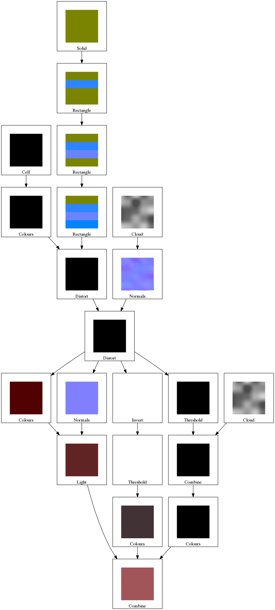